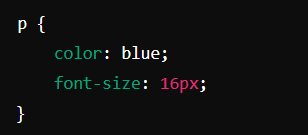
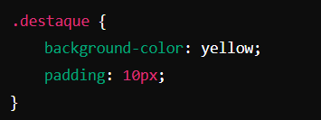
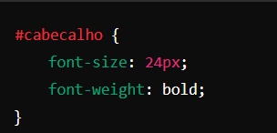

CSS é chamado de linguagem Cascading Style Sheet e é usado para estilizar elementos escritos em uma linguagem de marcação como HTML. O CSS separa o conteúdo da representação visual do site. Pense na decoração da sua página. Utilizando o CSS é possível alterar a cor do texto e do fundo, fonte e espaçamento entre parágrafos. Também pode criar tabelas, usar variações de layouts, ajustar imagens para suas respectivas telas e assim por diante.
Os seletores permitem aplicar estilos a elementos específicos do HTML. Os seletores em CSS são padrões que definem quais elementos HTML serão estilizados.
Exemplo prático:
Neste exemplo, todos os parágrafos (< p >) terão a cor azul e tamanho de fonte de 16 pixels.
Classes: São atributos que podem ser atribuídos a múltiplos elementos HTML para aplicar estilos comuns a eles. Uma classe é definida no HTML com o atributo class e no CSS com um ponto (.) seguido do nome da classe.
Exemplo prático:
Neste caso, todos os elementos com a classe destaque terão fundo amarelo e um preenchimento de 10 pixels.
São atributos que identificam exclusivamente um único elemento HTML em um documento. Um ID é definido no HTML com o atributo id e no CSS com um hash (#) seguido do nome do ID.
Exemplo prático:
Aqui, o elemento com o ID cabecalho terá um tamanho de fonte de 24 pixels e será em negrito.
Em CSS, as propriedades definem como um elemento HTML deve ser apresentado visualmente, e os valores especificam como essas propriedades devem ser aplicadas. Por exemplo:
Exemplo prático:
Valor: blue, #FF0000, rgb(255, 0, 0)Exemplo prático:
Valor: 16px, 1.2em, medium
Define o tamanho da fonte.
Exemplo prático:
Valor: yellow, #FFFF00, rgba(255, 255, 0, 0.5)
Define a cor de fundo de um elemento.Em CSS, a cascata e a especificidade são dois conceitos fundamentais que determinam como os estilos são aplicados aos elementos HTML quando múltiplas regras de estilo conflitam.
A cascata em CSS refere-se à ordem em que as regras de estilo são aplicadas aos elementos. Ela segue uma hierarquia que determina qual regra prevalece quando várias regras se aplicam ao mesmo elemento.